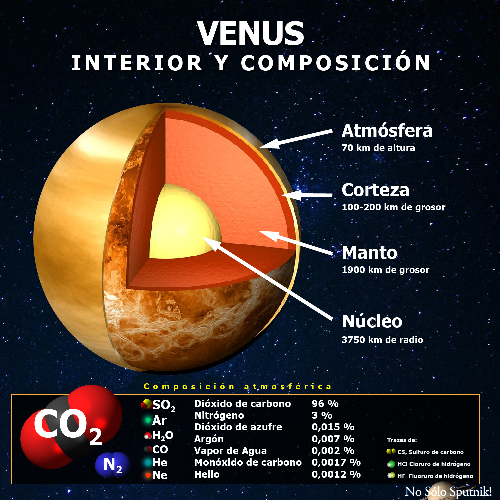
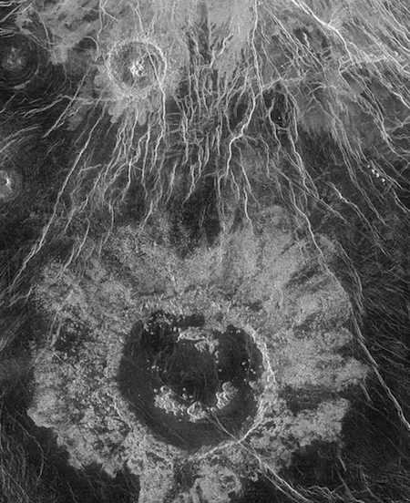

Sobre Venus
Venus es el segundo planeta interior del sistema solar es el planeta mas calido del sistema solar ademas presenta montañas y volcanes(Mas de 1.600 volcanes), por otro lado Venus es diferente al resto de sus planeta ya que
gira a la direccion contraria con respecto a otros planetas. Venus tarda 243 dias en girar solo una vez.Debido a que esta cerca del Sol, un año pasa muy rapido. Venus tarda 225 días terrestres en dar toda la vuelta alrededor del Sol
Estructura
Al estar el eje de rotación tan inclinado(casi 180º), El Polo Norte esta "en el Sur" y viceversa. Esto hace que Venus gire sobres sí mismo lentamente en un movimiento retógrado, al contrario que los otros planetas.
Caracteristicas
jjjDato curioso
jjj¿Sabias que?

Imagen de un crater en Venus